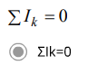
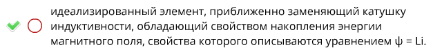
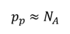
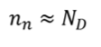
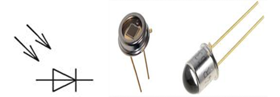
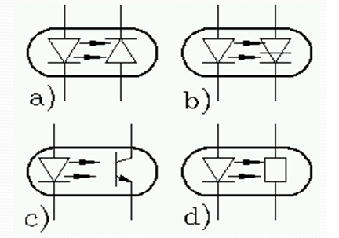

Если при расчете цепи ток ветви получился с отрицательным знаком, то это означает
Если при расчете цепи ток получился с отрицательным знаком, то необходимо
Укажите неправильный элемент в перечислении: в результате расчета узловые напряжения двух узлов могут оказаться
Идеальный источник электрического тока – это источник электрической энергии,…
электрический ток которого не зависит от напряжения на его выводах
В последовательном резонансном контуре возможен резонанс…
Напряжений
В параллельном резонансном контуре возможен резонанс…
Токов
Электрическая цепь –
Какое устройство используют для накопления энергии электрического поля
Конденсатор
Свойства резистивного элемента описываются с помощью
Вольт-амперной характеристики
На параллельных участках электрической цепи
одинаковое Напряжение
Электрический ток протекает
от точки с большим потенциалом к точке с меньшим потенциалом
Идеальный источник напряжения – это источник электрической энергии
напряжение на выводах которого не зависит от тока в нем
Реальный источник напряжения – это источник электрической
энергии,
характеризующийся электродвижущей силой и внутренним электрическим сопротивлением
Идеальный источник тока – это источник электрической энергии,
ток которого не зависит от напряжения на его выводах
Реальный источник тока – это источник электрической энергии,…
характеризующийся электродвижущей силой и внутренним электрическим сопротивлением
Математической моделью электрической цепи является
Граф схемы
Контуром электрической цепи называется…
замкнутый путь, проходящий через несколько ветвей и узлов
Участок электрической цепи, по которому протекает один и тот же ток называется
ветвью
Место соединения трех и более проводов называется
Узлом
Единицей измерения электродвижущей силы (ЭДС) источника является
Вольт
Если при неизменном напряжении ток на участке цепи
уменьшился в 2 раза, то сопротивление участка
Формула закона Ома для участка цепи, содержащего только приемники энергии, через проводимость g имеет вид
I=Ug
Выражение для первого закона Кирхгофа имеет общий вид

Выражение для второго закона Кирхгофа имеет общий вид
Что называется электрическим напряжением
Какими свойствами обладает идеальный источник тока
Резистивное сопротивление
Индуктивный элемент (индуктивность)

Емкостной элемент (емкость)
Ветвью называется
Узлом называется
Параллельными называются
На основании первого закона Кирхгофа
На основании второго закона Кирхгофа
Количество уранений, составляемых по второму закону Кирхгофа
Эквивалентными называются преобразования цепей
При последовательном соединении элементов
При последовательном соединении резисторов
При параллельном соединении резисторов
При последовательном соединении индуктивных элементов
При параллельном соединении емкостных элементов
Постоянными называются
Постоянный ток через конденсатор
Постоянный ток на индуктивности
Условие баланса мощностей
Расчет по методу контурных токов МКТ
Расчета по методу узловых напряжений МУН
Количество уравнений, составляемых по МУН
Периодическим называется
Электромагнитный процесс в ЭЦ, при котором мгновенные значения напряжения и токов повторяются через равные промежутки времени, называется
периодическим
Если периодическая функция f(t) (напряжение, ЭДС, ток) изменяется по закону синуса или косинуса, то электромагнитный процесс называется
Гармоническим
Амплитудой называется
Максимальное значение смещения или изменения переменной величины от среднего значения при колебательном или волновом движении
Наибольшее по абсолютному значению отклонение колеблющейся величины называется
Наибольшее по абсолютному значению отклонение колеблющейся величины называется
Амплитудным
Число циклов колебаний в интервале времени, равному 2π единицам, называется
Циклическая(угловая) частота
Угловой частотой называется
Фазой колебания называется величина
Действующим значением любой периодической функции называют
Действующее значение синусоидального тока или напряжения меньше его амплитуды
в 0.707 раз
Индуктивное сопротивление
XL = WL
Разность фаз между напряжением и током на индуктивности
Разность фаз между напряжением и током на емкостном элементе
Разность фаз между напряжением и током на резистивном элементе
Активными элементами цепи являются
Формулировка 2 закона Кирхгофа
Синусоидальная функция полностью определяется следующими величинами
Метод узловых потенциалов (напряжений) основан на
Законах Ома и 1 законе Кирхгофа
Задачей анализа является
Пассивными элементами цепи являются
Резистивное сопротивление, Индуктивный элемент, емкостный элемент
Формулировка 1 закона Кирхгофа
алгебраическая сумма токов, сходящихся в любом узле, равна нулю.
Резонанс токов может возникнуть
Резонанс токов может возникнуть при параллельном соединении индуктивности и емкости. В идеальном случае, когда в параллельных ветвях отсутствует активное сопротивление (R1=R2 = 0), условием резонанса токов является равенство реактивных сопротивлений ветвей, содержащих индуктивность и емкость, т. е.
ωoL = 1/(ωoC).
Резонанс напряжений может возникнуть
Выражение XL = XC соответствует
при XL = XC ток и напряжение совпадают по фазе, j = 0, цепь находится в режиме резонанса напряжений.
Условие возникновения резонанса
XL = XC
Электрический ток в проводящей среде
Сопротивлением называется
Проводимостью называется величина
обратная сопротивлению
Единица измерения полной мощности в гармонических цепях
вольт-ампер
При последовательном соединении элементов R, L и C при отрицательных значениях реактивного сопротивления и угла сдвига фаз электрическая цепь в целом носит следующий характер
емкостной
Полоса пропускания резонансного контура
обратно пропорциональна его добротности
Собственное (контурное) сопротивление – это
сумма сопротивлений в каждом независимом контуре
Вещественная часть комплексной мощности равна
активной мощности
P=UI cosϕ
активная часть комплексной мощности
Мнимая часть комплексной мощности равна
реактивной мощности
Q=UI sinϕ
реактивная часть комплексной мощности
S=UI sinϕ+jUI sinϕ
польная мощность
Воздействием называют
Напряжения и токи, действующие на входе цепи
Реакцией называют
Напряжения и токи, действующие на выходе цепи
Напряжения и токи, действующие на входе цепи, называют
На входе - воздействие
Напряжения и токи, действующие на выходе цепи, называют
на выходе – реакция
Комплексной передаточной функцией называется
Амплитудно-частотной характеристикой (АЧХ) называется
Фазочастотной характеристикой (ФЧХ) называется
АЧХ и ФЧХ
Частотой среза ωс называется частота, на которой модуль передаточной функции
Переходным процессом называется
Процесс замыкания или размыкания рубильников, выключателей, в результате которого происходит изменение параметров цепи, её конфигурации, подключение или отключение источников называется
Коммутацией
В начальный момент времени после коммутации ток в индуктивности
В начальный момент времени после коммутации напряжение на ёмкости
Значения токов в индуктивности и напряжения на ёмкости в момент коммутации называют
независимыми начальными условиями
Классический метод расчёта переходных процессов основан
Дифференцирующими цепями (ДЦ) называются
Интегрирующими цепями (ИЦ) называются
Четырехполюсником (ЧП) называется
Численно электрический ток определяется
Электрическое напряжение - это
Полупроводник представляет собой кристаллический твердый объект, его электропроводность….
Полупроводниковый диод ... ..
один p-n переход и два электрода
Ширина запрещенной зоны арсенида галия ... 1,42 эВ
1,43eV
Ширина запрещенной зоны германия…
0,67eV
Ширина запрещенной зоны диэлектриков составляет ....
>3eV
Ширина запрещенной зоны кремния составляет
кремния – 1,12 эВ
Какие носители заряда являются основными для n-полупроводников?
Электроны
Какие носители заряда вырабатывают ток в n-полупроводнике?
Электроны
Какие носители заряда являются основными для p-полупроводников?
Электроны
Какие носители заряда вырабатывают ток в p-полупроводнике?
дырки
Полупроводник p-типа это…..
акцепторный полупроводник
Полупроводник i-типа это…..
собственный полупроводник
Полупроводник n-типа это....
донорный полупроводник
Концентрация основных носителей заряда в полупроводниках p-типа равна…

Концентрация основных носителей заряда в полупроводнике n-типа равна

Диффузия - это ..........
Рекомбинация это ...... ...
Инжекция .это........
Какие носители заряда генерируются в собственном полупроводнике?
электроны и дырки
Сколько р-n переходов в диоде ?
1
От чего зависит ширина p-n перехода?
В каком режиме транзистор используется для усиления сигнала с малыми искажениями?
Активном режиме
Зависимость тока коллектора при постоянном токе базы – это:
выходная характеристика
Прибор, имеющий 2 взаимодействующих p-n перехода называется:
Биполярный транзистор
На чем основана работа полевого транзистора?
Полупроводниковый прибор, усилительные свойства которого обусловлены потоком основных носителей, протекающим через проводящий канал и управляемый электрическим полем - это:
Полевой транзистор
База – это:
Главное отличие коллектора от эммитера
Сколько режимов работы биполярного транзистора существует?
4 Четыре: активный, инверсный, режим отсечки, режим насыщения.
В каком режиме эмиттерный переход имеет обратное включение, а коллекторный переход — прямое:
в инверсом
В чём достоинство схемы с общим коллектором?
большое входное сопротивление
Резкое изменение режима работы диода называется:
Пробоем
Носителями какого заряда являются электроны?
отрицательного
Какая характеристика диода является основной?
вольтамперная
Какие виды проводимости существуют?
Электронная и дырочная
Полупроводниковый диод, предназначенный для стабилизации напряжения в источниках питания – это:
Стабилитрон
Какие виды пробоя лежат в основе стабилитрона?
лавинный и туннельный
В результате чего возникает лавинный пробой?
Ударной ионизации
Вещества, удельная электрическая проводимость которых меньше, чем у металлов и больше, чем у диэлектриков – это:
полупроводники
Пробой, обусловленный прямым переходом электронов из валентной зоны в зону проводимости смежной области, происходящим без изменения энергии электрона:
лавинный
Как называют средний слой у биполярных транзисторов?
база
Как называют центральную область в полевом транзисторе?
канал
Сколько p-n переходов у биполярного транзистора?
два
Тип диода, используемого в качестве переменного электрического конденсатора?
Варикап
Биполярный транзистор- полупроводниковый прибор, имеющий
A. с двумя p-n-переходами и тремя выводами, обеспечивающей усиление мощности электрических сигналов. 2 взаимодействующих перехода два типа носителей заряда – электроны и дырки
Как называются электроды полупроводникового диода
Электроды диода носят названия анод и катод
Какой тип диода используется для стабилизации напряжения?
Стабилитрон
Полупроводник с электрической емкостью -это
Варикап
Выражение для вольт-амперной характеристики полупроводникового диода.
Какой тип диода имеет отрицательное дифференциальное сопротивление в вольт-амперной характеристике?
Туннельный диод
В каком режиме работает биполярный транзистор при обработке аналоговых сигналов?
активный
Сколько схем включения имеет биполярный транзистор?
три
Фотодиод- полупроводниковый прибор, используемый для
преобразования оптических сигналов в электрические сигналы
Сколько каналов в МДП транзисторе?
1
На каком рисунке изображен варикап
На каком рисунке изображен фотодиод

На каком рисунке изображен оптрон

На каком рисунке изображено включение БТ по схеме с ОБ
На каком рисунке изображено включение БТ по схеме с ОК
На каком рисунке изображено включение БТ по схеме с ОЭ
Покажите активный режим работы
Покажите инверсный закрытий режим
В каком режиме эмиттерный переход имеет обратное включение, а коллекторный переход – прямое:
в инверсном
Опреденление эмиттернего перехода
p-n переход между эмиттерной и базой
Крутизна вольт амперной характеристики является основным параметром:
полевого эмиттера
Коэффициент усиления транзистора равен 100. Ток коллектора равен 1 амперу, ток базы равен …:
10 mA
Вещества, почти не проводящие электрический ток:
диэлектрик
Чему равен коэффициент переноса электронов в реальных транзисторах?
0,980 ÷ 0,995
У каких веществ на энергетической диаграмме валентная зона примыкает к зоне проводимости?
диэлектрики
У каких веществ на энергетической диаграмме валентная зона отделена от зоны проводимости большой запрещённой зоной?
диэлектрики
В полупроводниках имеют место два типа носителей заряда, это
электроны и дырки
Какие носители заряда преобладают в собственном полупроводнике?
преобладающих нет
Для чего в полупроводники вводят примесь?
Для увеличения числа носителей зарядов одного или другого типа
Необратимым типом пробоя полупроводникового диода является
Тепловой пробой
Коэффициент передачи тока эммитера – это коэффициент:
пропорциональности
Зависимость тока коллектора при постоянном токе базы – это:
Выходная характеристика.
Какие параметры характеризуют устойчивость транзистора при работе в диапазоне температур:
Тепловые параметры
Какими свойствами обладает p-n переход?
Выпрямительными
Для стабилизации рабочей точки усилительного каскада используют:
введения отрицательной обратной связи по постоянному току
Входной ток операционного усилителя:
Ibx=0
Отрицательная обратная связь в усилителе
снижает искажения
Полупроводники по проводимости находятся
между проводниками и диэлектриками.
К полупроводникам р-типа относится ...
полупроводник с избытком концентрации дырок
Основное свойство полупроводникового диода
преобразовывать переменный ток в постоянный
Электронно-дырочный переход это:
p-n переход
Какую структуру имеет биполярный транзистор?
n-p-n или p-n-p-n
Какую структуру имеет тиристор?
p-n-p-n
Сколько выводов имеет тиристор?
тиристоров с тремя электрическими выводами — анодом, катодом и управляющим электродом
Сколько выводов имеет транзистор?
с тремя выводами (обычно), на один из которых (коллектор) подаётся сильный ток, а на другой (база) подаётся слабый (управляющий ток). При определённой силе управляющего тока, как бы «открывается клапан» и ток с коллектора начинает течь на третий вывод (эмиттер).
Какую функцию выполняет диодный мост в источниках питания?
выпрямление
Напряжение между входами операционного усилителя…
Равно 0
Амплитудно-частотной характеристикой усилителя называют зависимость…
Операционный усилитель работает с входными сигналами…
напряжения
Какую функцию выполняет диод в выпрямительных схемах?
вентиля
Примеси, атомы которых отдают электроны называются…
донорами
Область в полевом транзисторе, через которую проходит поток основных носителей заряда, т.е. выходной ток, называется…